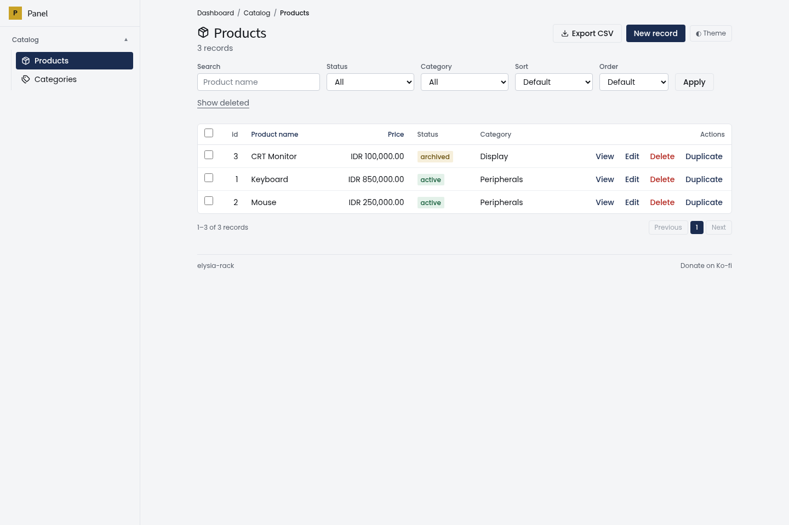
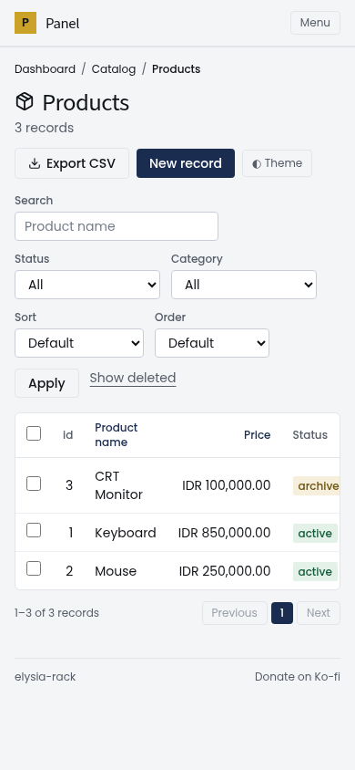

Register a model. Get a resource.
One rack() call in your Elysia app turns a Drizzle or Prisma model into REST and QUERY routes, search, validation, authorization, OpenAPI metadata, and a React admin panel.
rack("", { model: products })- GETpanel
- QUERYlist
- QUERYdetail
- POSTcreate
- PUTreplace
- PATCHupdate
- DELETEdelete
/data.The same plumbing, every time.
Every service that manages data ends up rebuilding routes, reads, authorization and admin panels, once per model.
Routes, by hand. List, detail, create, replace, update, delete, written per model, plus the panel route and the wiring that keeps them consistent.
Reads, again. Search, filters, sorting, pagination: the same query API every client needs, rebuilt each time with its own edge cases.
Safety, everywhere. Each write needs its own validation schema and its own authorization rule, and creates need idempotency to be safe to retry.
A panel, somehow. Then someone builds the browser UI: tables, forms, dialogs, bulk actions. It drifts from the API the moment either side changes.
One registration per model replaces all of it.
What one registration includes.
-
Substring search across the fields you choose; the adapter turns it into SQL.
-
Requests may filter on exposed fields only. Everything else is ignored.
-
Field and direction come from the request, constrained to your list.
-
Default and maximum page size, enforced on the server.
-
TypeBox schemas per operation, enforced by Elysia itself.
-
Per operation: allow, deny, a permission string, or your own function.
-
Creates need a key; replays return the stored 201 instead of writing twice.
-
Deletes stamp deletedAt. Reads skip them; the panel restores them.
From model to resource.
Define the model.
A Drizzle table or a Prisma model: the schema you already have.
Register it with rack().
One call: the path, the adapter, and how reads and writes should behave.
Open the panel.
Two more calls mount the admin UI. Routes and OpenAPI metadata are already live.
import { Elysia } from "elysia"
import { Database } from "bun:sqlite"
import { drizzle } from "drizzle-orm/bun-sqlite"
import { integer, sqliteTable, text } from "drizzle-orm/sqlite-core"
import { rack } from "elysia-rack"
const products = sqliteTable("products", {
id: integer("id").primaryKey({ autoIncrement: true }),
name: text("name").notNull(),
price: integer("price").notNull().default(0),
status: text("status").notNull().default("active"),
})
const db = drizzle(new Database("app.db"))
new Elysia()
.use(rack("/catalog/products", {
model: { drizzle: { db, table: products } },
query: {
filterable: ["status"],
sortable: ["name", "price"],
defaultSort: { field: "name", direction: "asc" },
pagination: { default: 20, max: 100 },
},
metadata: { id: "products", label: "Product", group: "Catalog" },
}))
.use(reactPlugin())
.use(dashboard({ title: "My Shop", path: "/" }))
.listen(3000)
$ curl -X QUERY localhost:3000/catalog/products/data
{ "resource": "products", "operation": "list", "data": [{ "id": 1, "name": "Keyboard", "price": 850000, "status": "active" }], "total": 1 }
The full setup, from the getting-started guide.
The panel comes with it.
Every rack serves its own admin UI at the resource path — table, forms, filters, soft-delete restore, bulk actions. It reads and writes through the same routes.


Rack your first model.
$ bun add elysia-rack elysia react react-dom
Runs on Bun 1.0+ or Node.js 20+. Needs Elysia 1.4+, React 18+ for the panel, and Drizzle or Prisma for the model. Reads use the QUERY method; reverse proxies and CDNs must allow it. There is no built-in login system: authorization rules are yours.